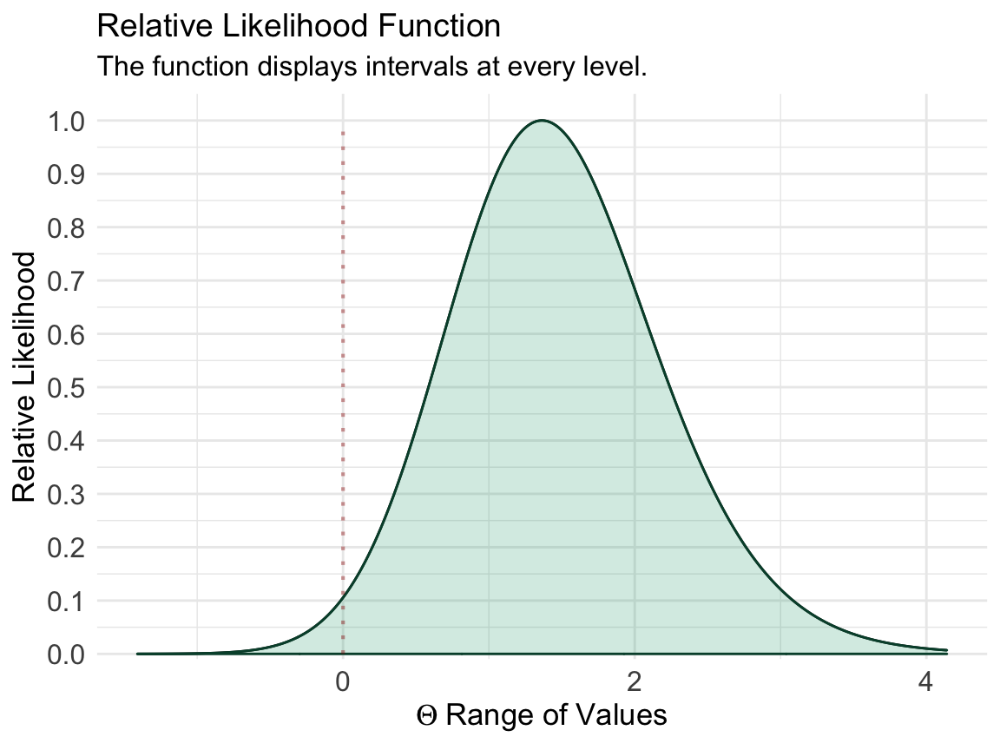
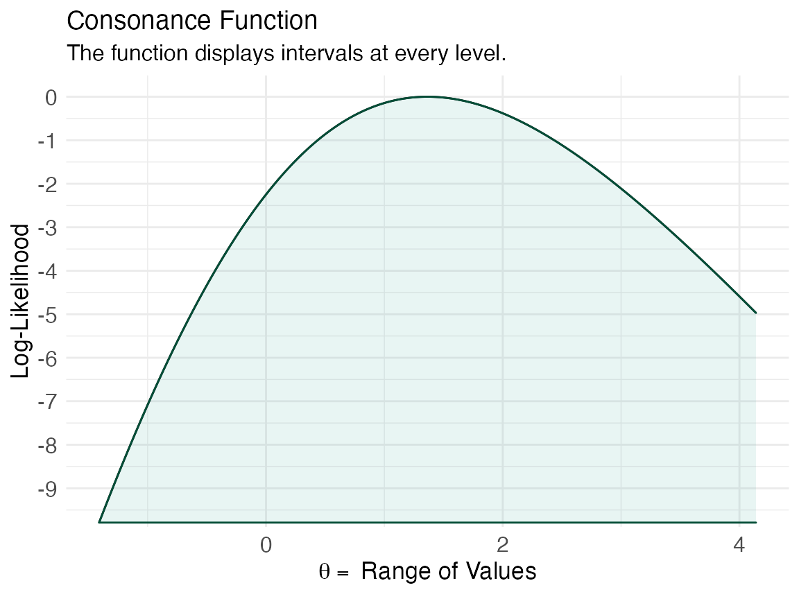
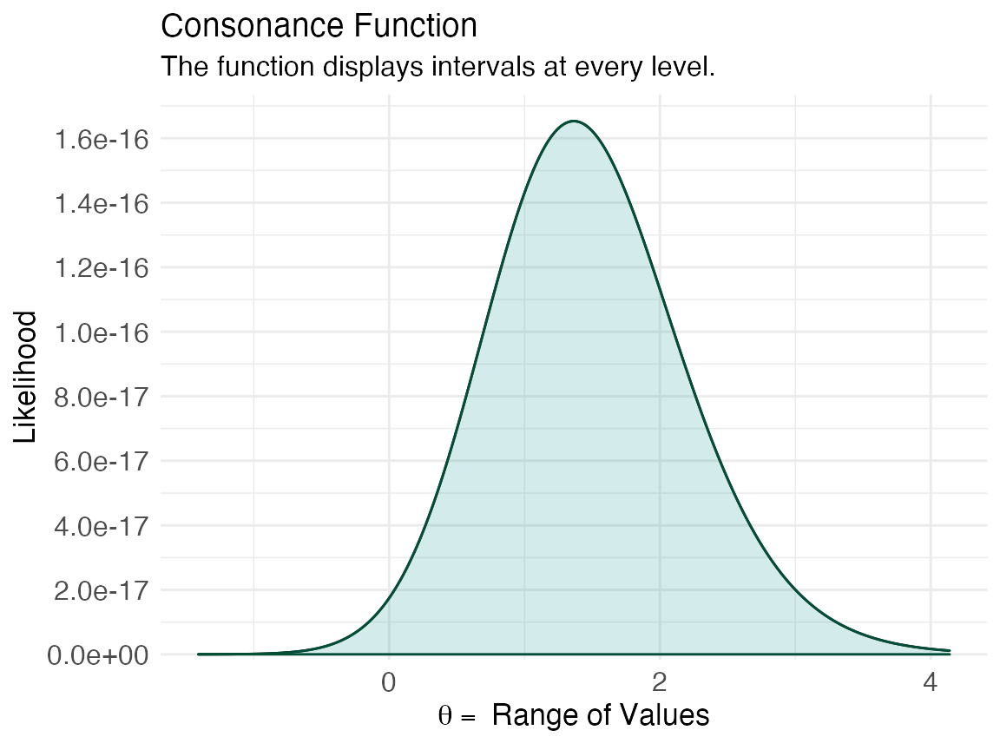
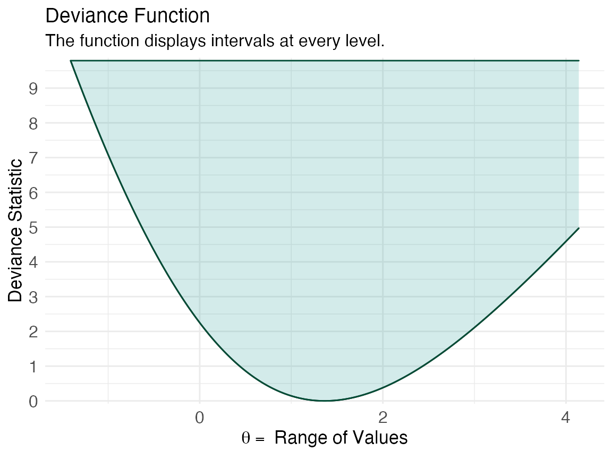

For this last example, we’ll explore the curve_lik() function, which can help generate profile likelihood functions, and deviance statistics with the help of the ProfileLikelihood package.1
library(ProfileLikelihood) #> Loading required package: nlme #> Loading required package: MASS
We’ll use a simple example taken directly from the ProfileLikelihood documentation where we’ll calculate the likelihoods from a glm model
data(dataglm) xx <- profilelike.glm(y ~ x1 + x2, data = dataglm, profile.theta = "group", family = binomial(link = "logit"), length = 500, round = 2 ) #> Warning message: provide lo.theta and hi.theta
Then, we’ll use curve_lik() on the object that the ProfileLikelihood package created.
lik <- curve_lik(xx, dataglm)
Next, we’ll plot three functions, the relative likelihood, the log-likelihood, the likelihood, and the deviance function.
ggcurve(lik[[1]], type = "l1", nullvalue = TRUE)

ggcurve(lik[[1]], type = "l2")

ggcurve(lik[[1]], type = "l3")

ggcurve(lik[[1]], type = "d")

The obvious advantage of using reduced likelihoods is that they are free of nuisance parameters
\[L_{t_{n}}(\theta)=f_{n}\left(F_{n}^{-1}\left(H_{p i v}(\theta)\right)\right)\left|\frac{\partial}{\partial t} \psi\left(t_{n}, \theta\right)\right|=h_{p i v}(\theta)\left|\frac{\partial}{\partial t} \psi(t, \theta)\right| /\left.\left|\frac{\partial}{\partial \theta} \psi(t, \theta)\right|\right|_{t=t_{n}}\] thus, giving summaries of the data that can be incorporated into combined analyses.
References
1. Choi L. ProfileLikelihood: Profile Likelihood for a Parameter in Commonly Used Statistical Models.; 2011. https://CRAN.R-project.org/package=ProfileLikelihood.